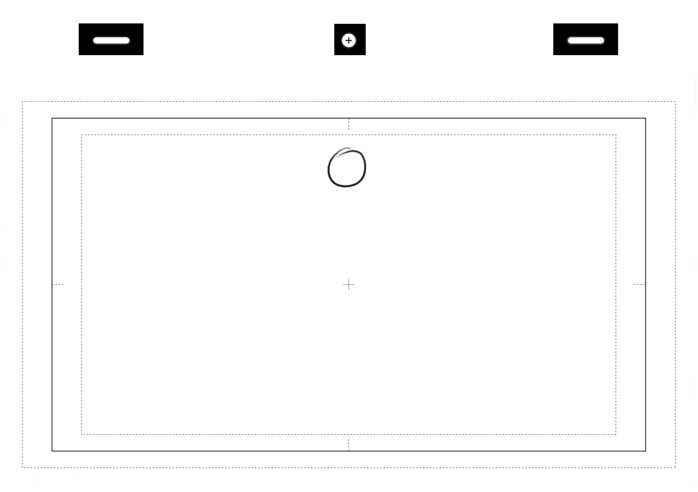

12 Principios de la Animación
Los 12 principios de la animación son una lista de normas recogida en el libro The Illusion of Life, escrito en 1981 por Frank Thomas y Ollie Johnston. Dos pioneros de la animación en Disney en los años 30-50. Una serie de principios que tenemos que tener en cuenta siempre que queramos realizar cualquier tipo de animación. Aquí encontraréis una versión actualizada y con nuevos ejemplos animados de los doce principios básicos de la Animación de Disney, en Español (Incluye PDF). Válidos para todas las disciplinas y técnicas de animación. Ya sea Animación 2D ó 3D, Tradicional o Digital.
- ¿Que son?
- Estirar y Encoger
- Anticipacón
- Puesta en Escena
- Acción Directa y Pose a Pose
- Acción Cont inuada y Superpuesta
- Entradas Lentes y Salidas Lentas
- Arcos
- Acción Secundaria
- Timing
- Exageración
- Solidez
- Personalidad y Atractivo
- Referencias
¿Qué son los 12 principios de la animación?
Los llamados «doce principios básicos de la animación» fueron presentados en 1981 por los animadores Ollie Johnston y Frank Thomas de Walt Disney Animation Studio en su libro The Illusion of Life: Disney Animation basándose en el trabajo de los animadores de Disney desde 1930 en adelante. Muchos animadores llaman a este libro la «biblia de la animación» y en 1999 fue votado como el mejor de los libros de animación de todos los tiempos. El objetivo de documentar estos principios fue crear guías para producir animaciones más realistas y que las animaciones se apegaran un poco más a las leyes básicas de la física, aunque también se tratan temas más abstractos, como la sincronización emocional y el atractivo de un personaje. Aunque los 12 principios originalmente fueron desarrollados para usarse en animación tradicional, estos también pueden utilizarse como guías en diseño interactivo para la creación de transiciones y microinteracciones en productos digitales

Estirar y Encoger
Estirar y encoger consiste en deformar un objeto, cuerpo o una pose, para lograr aumentar la sensación de movimiento o crear un efecto más cómico o dramático. Pongamos el clásico ejemplo de una pelota botando. Ésta se aplasta al tocar el suelo (cuando frena) y se estira en el aire (cuando coge velocidad). Sin embargo esta base también puede aplicarse en un personaje que coge impulso para saltar. Si lo pensáis bien, no tiene por qué existir una deformación. Basta con comprimirla contra el suelo flexionando todo su cuerpo para luego, durante el salto, estirar todas sus extremidades en la misma dirección. Fácil, ¿no? Esto, en animación 3D puede aplicarse a la piel, músculos, huesos, articulaciones,… También se puede aplicar utilizando simulaciones dinámicas de la ropa, el pelo y otros elementos que intervienen en la animación de acciones secundarias. Recordad que en función del tipo de animación que queráis crear (realista, cartoon o snappy), debéis usar este principio con mayor o menor intensidad.

Anticipación
El principio de la anticipación sirve para guiar la mirada del público al lugar donde está a punto de ocurrir una acción. Y por lo general suele realizarse en dirección contraria a dicha acción. Una niña que coge carrerilla, un jugador que va a lanzar una pelota de béisbol, o incluso un personaje a punto de estornudar. Esto hace que cuanto mayor es la anticipación, más previsible se hace lo que va a suceder. Pero también mayor es el suspense. En cuanto a la animación 3D, podremos aumentar o disminuir este efecto creando curvas en nuestro personaje más o menos pronunciadas. Incluso deteniendo los valores momentáneamente en los ejes apropiados de nuestro editor de curvas. Son dinámicas de la animación que aprovecharemos para llamar la atención de nuestro espectador.

Puesta en Escena
La Puesta en Escena es el principio nos indica que lo primero es dejar clara la idea de lo que sucede en un escenario. Puede definir una acción, el acting o la personalidad de nuestro actor, sus intenciones o incluso su estado de ánimo. Por supuesto, aunque aquí está definido el término para el cine de animación, esto también sucede en cualquier plató de rodaje real, escenario de un teatro o incluso en el contenido de un cuadro artístico. Aquí además interviene la naturaleza de la acción en cada plano y por lo tanto, la situación de los objetos y la posición y movimiento de nuestra cámara. La puesta en escena suele definirse durante el proceso del Storyboard En cualquier caso, debemos dejar claro el contexto y hacer identificables las relaciones de unos elementos (o personajes) con otros. En nuestra Industria, los animadores 3d utilizamos las herramientas de Layout y animáticas para precisamente definir la puesta en escena y ponerla a prueba. Son la mejor herramienta para construir y saber si funciona nuestro plano antes de empezar a animar cualquier clave.

Acción Directa y Pose a Pose
Aunque está definido como un principio de la animación, creo que estos dos conceptos deberíamos entenderlos como dos técnicas de animación diferentes. Es decir, podemos crear una animación de forma secuencial, fotograma a fotograma, hasta concluir una acción sin planificar y con una duración impredecible (Animación Directa o Acción Directa). O podemos crear una animación planificando las poses más importantes (Poses clave o Extremos) para luego intercalar o crear transiciones controladas entre ellas (Pose a Pose). Ahora viene la pregunta tonta pero lógica. ¿Cuál es mejor? Pues os daré una respuesta tonta pero también lógica; pues depende. Depende de la escena que tengas que planificar, el nivel de control que necesites tener o las necesidades de tu supervisor. Imagina una reacción de acciones en cadena, o un movimiento corporal muy loco y explosivo. En cualquier caso, en Animación 3D, lo más común es utilizar la técnica Pose a Pose mediante el proceso de Blocking. Es decir, crear las poses de nuestro modelo 3D en los fotogramas apropiados. Esto nos ayuda a tener un mayor control de la duración y la posición de todos los elementos que intervienen en cada momento.

Accion Continuada y Superpuesta
Es un principio que busca dotar de realismo a la animación, para esto tenemos que tomar en cuenta que no todos los elementos que conforman un cuerpo u objeto se mueven de la misma manera, ni a la misma velocidad. Cuando la masa principal de un caracter se detiene, las demás partes continuan moviendose hasta alcanzar a la masa principal, no todas las partes del personaje se detienen al mismo tiempo. Con esta premisa deberemos tener en cuenta que existen elementos que aunque conservan la misma animación que otros, dicha animación ocurre con cierto desfase. Un ejemplo muy típico sería la cola de un perro; cada hueso se mueve ligeramente después que el anterior, permitiendo conseguir ese efecto de látigo en mayor o menor medida.

Entradas lentas y Salidas lentas
Entradas Lentas y Salidas Lentas. Otro principio orientado crear animaciones más naturales y orgánicas. Todo objeto en movimiento, afectado por la gravedad y resistencia, tiene una aceleración y una deceleración (Progresivas). Es decir, en las salidas y entradas el objeto se mueve más lento, mientras que durante la trayectoria, la velocidad es más rápida. Existe una excepción, las colisiones. Si te tiras por una ventana, créeme, la parada va a ser espontánea. Sin embargo, en un personaje que anda, o estira el brazo para coger el teléfono, absolutamente todas las partes de su cuerpo están acelerando y desacelerando en todas las direcciones y constantemente. Esta es una de las cosas que adoro de la Animación 3D, ya que los programas nos permiten obtener resultados muy precisos con solo ajustar las curvas de nuestro editor. Por supuesto, todo esto es válido para todas las técnicas de Animación.

Arcos
El fundamento de este Principio de la Animación – Arcos, se basa en que los seres vivos no nos movemos en línea recta. Estamos construidos con articulaciones que funcionan como pivotes. Además no somos óptimos, nuestras trayectorias no son perfectas. Esta estúpida evidencia que os acabo de soltar, a acostumbrado a nuestro cerebro a percibir de forma diferente cualquier cosa que no se mueva así. Bien. Este principio de la Animación se basa precisamente en crear arcos en los movimientos de nuestros personajes para darle una apariencia natural. A veces deberemos incluso exagerar una curva donde aparentemente no existiría en la vida real. Sin ellos obtendremos un resultado robótico y siniestro. En animación 3D, existen muchas herramientas automatizadas que nos ayudarán a crear arcos más o menos acentuados en función de la velocidad de la trayectoria. Podemos también utilizar constraints para forzar o limitar los arcos en aquellas trayectorias que nos interese.

Accion secundaria
El principio de la acción secundaria en animación consiste en dar vida a esos pequeños elementos que complementan a la acción principal y de hecho son consecuencia de ella. Las reacciones de nuestro pelo, el clásico sombrero que se queda flotando en el aire si un personaje de pronto echa a correr. Pero también botar una pelota en mitad de una conversación son claros ejemplos de animación secundaria. Por eso se llama acción secundaria, porque nunca debe estar más marcada que la acción dominante. Solo existe para enfatizarla. Recordad que tenemos la obligación de comunicar y atraer la atención de nuestro espectador al lugar que nos interesa. De otra forma lo distraemos y perderíamos nuestro objetivo. En cuanto a la animación 3D. Se pueden utilizar simulaciones dinámicas y scripts para controlar mucha de la acción secundaria, el pelo, la ropa, simulaciones físicas, etc. A día de hoy todas las Películas de Animación 3D utilizan esta tecnología para ahorrar millones de horas de trabajo (Y de hecho, es una de las profesiones mas demandadas).

Timing
El tiempo se usa para referirse a la velocidad y el tiempo que un personaje debe tomar para completar una acción. En un principio parece que solo afecta a la naturalidad de nuestra animación. Pero créanme, cuando creamos exactamente el mismo movimiento en dos personajes, pero a diferentes velocidades, surgen sentimientos e intenciones completamente diferentes. Cuando queremos expresar algo con lenguaje corporal, necesitamos usar el tiempo correcto. Combina diferentes ritmos para cada parte de nuestro cuerpo. Podemos detener por completo el movimiento de algunas partes y mover otras partes de formas realmente locas. En este sentido, las herramientas y programas de animación 3D son geniales porque nos permiten distinguir y afinar las teclas que nos interesa mover o bloquear.

Exageración
La exageración representa la función y la acción de los objetos de manera extrema para lograr un efecto cómico o dramático. Esto puede incluir distorsionar la forma y el movimiento de los objetos. Podemos exagerar las expectativas, comprimir y estirar, incluso el tiempo o los arcos. Por supuesto, como todos los demás, debemos aplicar este principio de manera consistente. Depende de la situación, el estilo de animación o la intensidad emocional de la escena.

Solidez
El principio del dibujo sólido significa representar formas en tres dimensiones, creando la ilusión de volumen y peso en una pantalla plana. La otra cosa a tener en cuenta, que no suele explicarse, es para cada imagen que compone la secuencia. Nuestra animación debe ser coherente, todas las poses que componen esa animación deben funcionar de forma independiente y ser coherentes entre sí. Por ejemplo, si nuestro personaje está molesto y detenemos alguna toma de él, debería reflejar ese sentimiento sin mirar toda la secuencia. Si además puedes transmitir la idea al ver la silueta, obtienes un pase VIP al nirvana del artista.

Personalidad y Atractiva
Los objetos y personajes animados deben ser agradables a la vista y tener un aspecto placentero. La personalidad o apariencia también debe ser estable y atractiva. Al igual que con un actor real, la personalidad debe reflejar sus complejos, sus deseos y necesidades. Estos marcarán sus acciones y reacciones a lo largo de la película. También, encontramos el principio, como en el diseño de personajes, de buscar el atractivo, la credibilidad y la coherencia, para que la audiencia realmente sienta al personaje. Está vivo y es divertido.

Referencias
Santamarina-Campos, V. (2018). Generación de ideas: De la idea al proyecto. Zenodo. Rodríguez, G. (2019). Elaboración ruta instruccional de un producto multimedia educativo. Universidad Nacional Abierta y a Distancia, UNAD. Colombia. Rodríguez, G. (2019). Elementos para la conceptualización de un producto multimedia educativo. Universidad Nacional Abierta y a Distancia, UNAD. Colombia. repository